| 日付 | 2018年11月18日（日） |
|---|---|
| メンバー | 家族（妻、長女・7歳、長男・5歳） |
| アクセス | 車 |
息子が5歳になり、だいぶ体が動くようになってきたので
今回初めて有料のアスレチックコースに挑戦してみることにする。
かなり古そうな施設だが、首都圏にある数少ないアスレチックコースだ。
オープン直後の9時過ぎに駐車場に到着。第一駐車場は満車で第2駐車場に車を停める。
ポイント1のアスレチックはすでに人が並び始めていたので、空いている場所を探す。
こちらはなぜかポイント番号のないアスレチック。まずはここで準備運動。

息子は少々苦戦しているが頑張って挑戦している。
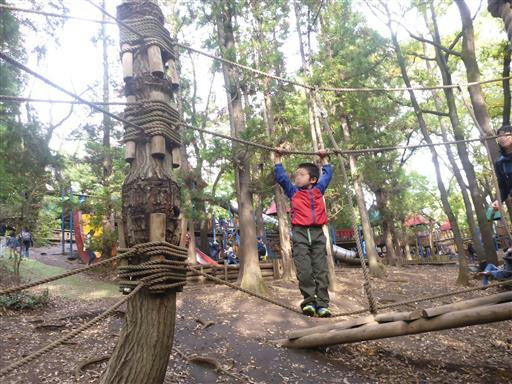
何のためにあるのかよく分からない短いネットトンネル。一応潜ってみる。
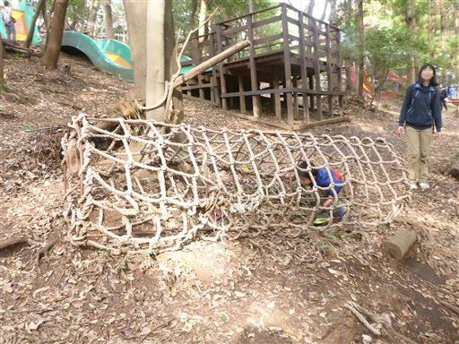
ポイント11あたりからコースに合流する。この辺りはまだ空いている。
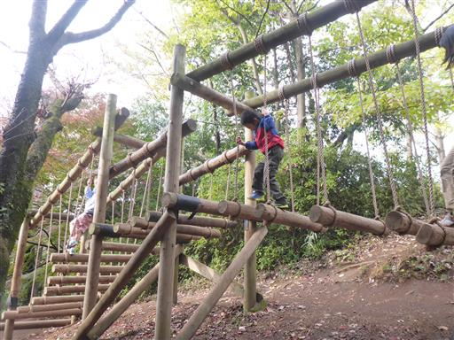
丸太とネットの坂を登る。
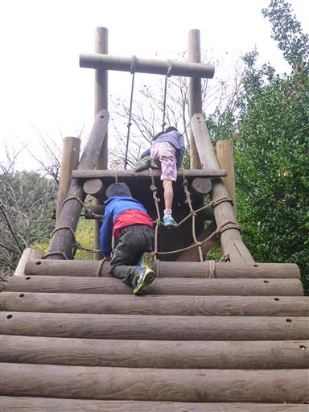
その後垂直の壁を降りる。足をかける場所がなく結構難しい。
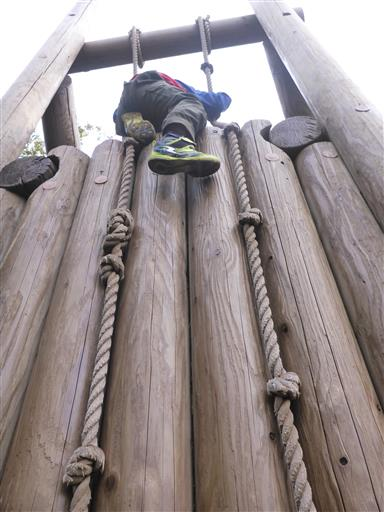
このアスレチックコースの目玉、水上アスレチックコース。
失敗すると水に落ちる恐怖のアスレチックだ。
息子は特にやりたがらなかったので、水上コースは控えておく。
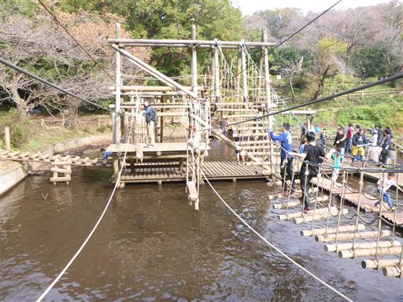
いかだ走り。大人は体重が重く沈みやすいので怖い。
全速力で駆け抜ける。
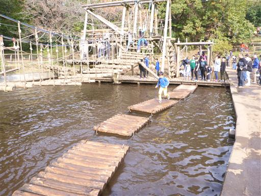
ボート乗り。このあとロープが引っ掛かってバランスを崩し転倒。びしょ濡れになってしまった。。。
子供はともかく、まさか自分が池に落ちるとは思わなかった。
その後、売店でパンツとシャツと靴下を購入。ズボンは速乾性なので助かった。
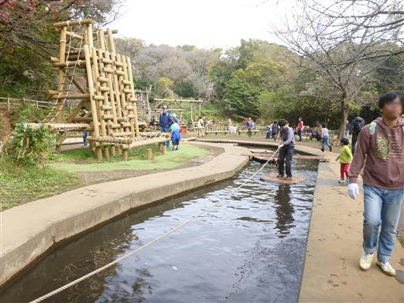
着替えをしている間、子供たちはアスレチックを先に進む。
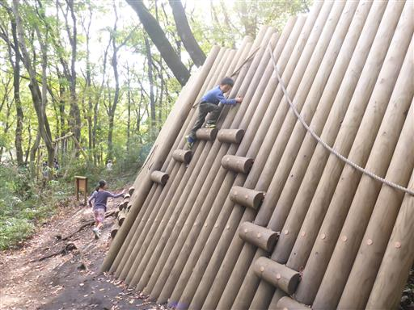
布の滑り台。そこそこスピードが出て面白い。
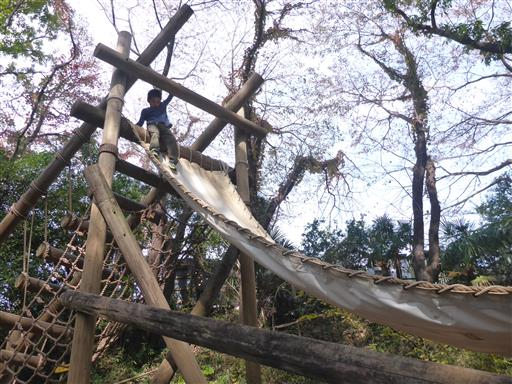
ありじごくで子供たちに追いつく。
ただの大きな穴なのだがかなり急な斜面の場所もあり、これも結構面白い。
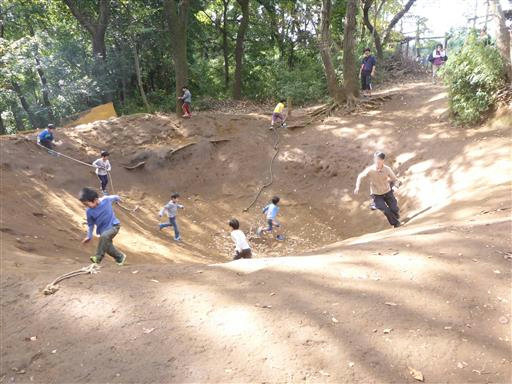
必死でくらいつく。昼近くになり、だんだんと子供の数が増えてきて、大人がやりにくくなる。
アスレチックに挑戦している大人はほとんどいない。。。
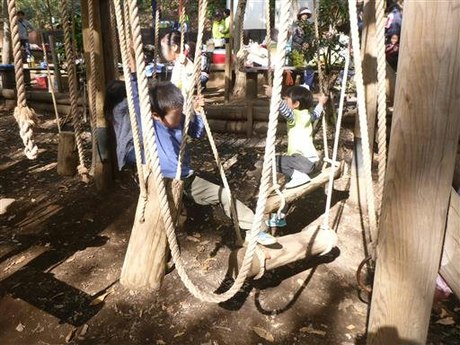
昼食をとるため、水上コース前のテーブルに移動。
偶然、娘の保育園時代の友人と出会ったので、ここから行動を共にする。
昼食後、子供たちは再び水上アスレチックに挑戦している。
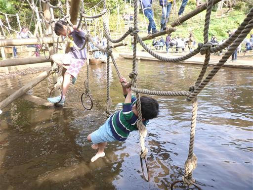
自分も懲りずに、やり残したコースを中心にチャレンジ。
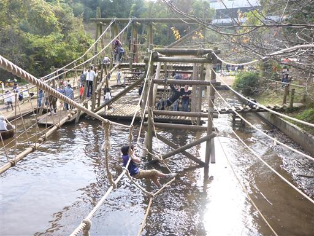
その後、場所を移動して複合遊具で遊ぶ。
このトンネル滑り台が見た目よりもかなりスピードが出る。
頭を低くしていないと頭を打つ構造になっているようで、
頭を打って泣いている子がたくさんいた。。。
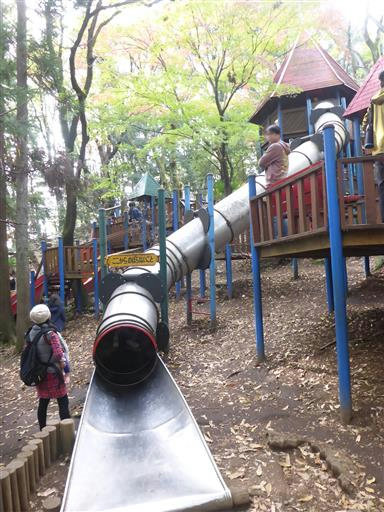
登った後は柵？不思議な構造だ。
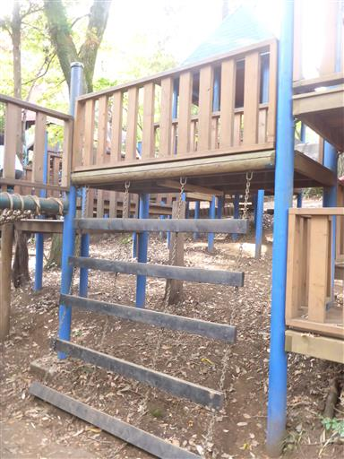
フリーフォール滑り台。垂直に落ちるので、大人でも怖い。
息子は最初手を繋いで滑ったが、一人でも滑れるようになった。
スピードが出過ぎないようにか摩擦が大きく、
何度も滑っているとズボンに穴が開いてしまった。。。
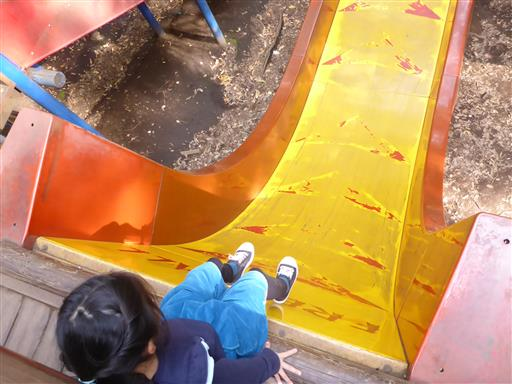
最後にポイント50のアスレチックに挑戦。
バランス感覚が発達していない子供には難しいが、大人にとっては易しい。
厳密に全てのコースを回ってはいないが、一通りぐるっと回って遊べたので本日はここまでとする。
子供たちは体を動かせて満足したようだ。
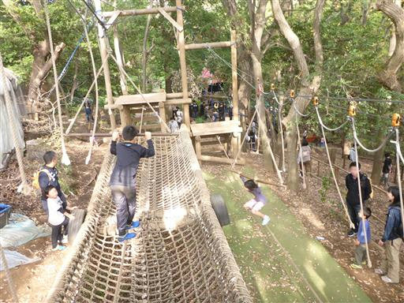